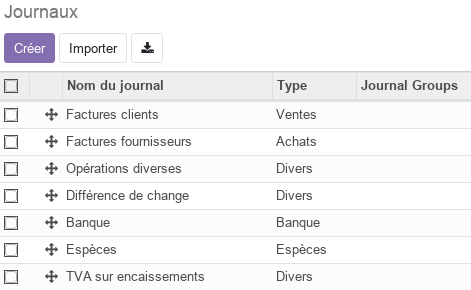
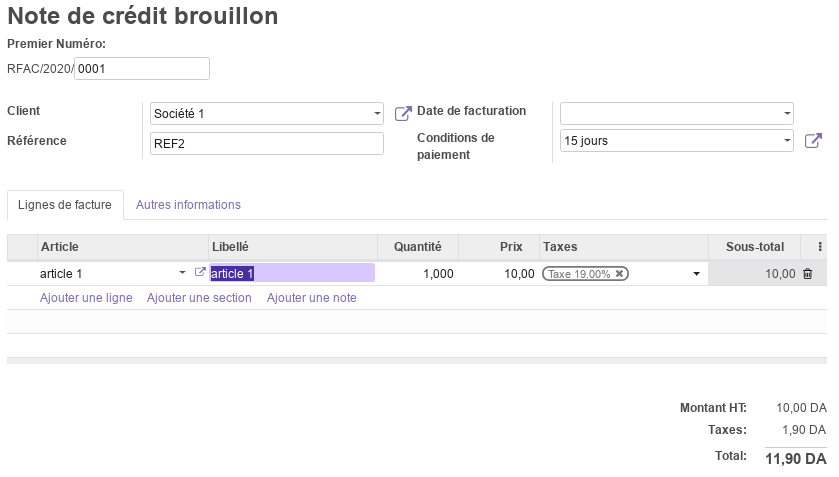
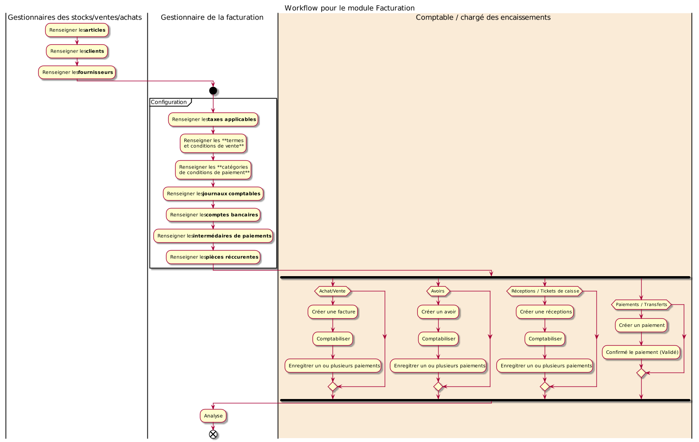

Module Facturation¶
Ce document illustre les différentes fonctionnalités du module Facturation d’odoo 13 community.
Présentation du module¶
Ce module est destiné à simplifier la facturation afin de se faire payés plus rapidement. Il permet de facturer automatiquement sur la base des bons de commandes, des commandes de livraison, des contrats ou des feuilles de frais générés. Odoo facturation permet aussi :
d’acceptez les paiements en ligne.
d’éliminez les soucis des rappels pour des paiements en retard.
de simplifier la configuration du suivi automatique.
de garder une trace des mouvements sur le compte en banque et sur le statut des factures.

Configuration (admin)¶
Cette section, réservée aux administrateurs et Gestionnaires des factures, permet de définir les principaux paramètres relatifs à la facturation aux paiements et à la comptabilité.
Configuration des Taxes¶
La configuration des taxes permet de définir les paramètres relatifs aux taxes par défaut et à la méthode d’arrondi.

Pour les taxes par défaut, le Gestionnaire des factures peut ajouter celles qu’il utilise le plus fréquement en opérations de vente et d’achat.
Configuration des Devises¶
La configuration des Devises permet la devise principale utilisée. Si la société effectue des transactions avec d’autres devises, le paramètre Multidevises doit être activé.

Configuration des Factures Clients¶
Cette section permet de définit les paramètres relatifs aux factures clients, tel que les Options d’envoi par défaut, l’affichage du sous-total des lignes, les Termes et Conditions par défaut, les Avertissements lors de la facture de certains clients et les Arrondis lors du paiement en espèces.

Conditions de paiement¶
Cette section permet de gérer les différentes catégories de conditions de paiements en fonction des délais alloués. Ces délais peuvent être associés à des échéances fixes ou à des paiements partiels en pourcentage.

Taxes¶
Cette section permet de gérer les différentes catégories de taxes applicables à l’entreprise et de renseigner leurs paramètres comptables, tel que la base du calcul, la portée le motant, la répartition comptable, …

Position fiscale¶
Cette fonctionnalité est utile dans le cas où des régimes fiscaux spécifiques sont appliqués aux clients / fournisseurs (selon la localisation, exonérations à l’export, …). Odoo permet aussi de définir des correspondances de taxes afin de les appliquer automatiquement en fonction de la position fiscale du client/fournisseur.

Incoterms¶
Cette section permet de définir les catégories d’Incoterms utilisés par l’entreprise.
Journaux¶
Cette section permet de gérer les différentes catégories de journaux utilisés pour l’enregistrement des opérations comptables.

Ajouter un compte bancaire¶
Cette commande permet de créer un nouveau compte bancaire ainsi que le journal comptable qui lui est associé.

Comptes bancaires¶
Cette section liste les différents journaux relatif aux comptes bancaires de l’entreprise.

Intermédiaires de paiement¶
Cette section liste les différents types d’intermédiaires de paiement disponibles pour les opérations classiques (Virement bancaire, …) ou enligne.
Journal Groups¶
Cette section permet de définir les différentes catégories de groupes de journaux compatbles.
Modèles de lettrage¶
Cette section permet de prédéfinir des pièces comptables afin de rapprocher facilement les pièces récurrentes comme les frais bancaires. Ces peuvent être fixes ou variables (ex : montant dépend du solde de notre compte en banque).
Arrondis d’espèces¶
Cette section permet de définir des arrondis modèles réutilisables d’arrondis d’espèces.
Clients (Menu)¶
Cette partie, qui de manière générale est automatiquement mise à jour par les modules Ventes et Achats, permet de gérer toutes les opérations de facturation client. Afin de l’exploiter il est indispensable de renseigner en premier la liste des clients de l’entreprise dans la section Clients.
Factures¶
Cette section permet de gérér les factures clients en renseigants toutes les informations nécessaires tel que la référence, la date, les conditions de paiement, les termes et les articles.

Cette facture, imprimable avec la commande Imprimer/Factures, progresse par plusieurs état qui sont : Brouillon, Comptabilisé.
Avoirs¶
Cette section permet de gérér les avoirs (Notes de crédits) clients en renseigants toutes les informations nécessaires tel que la référence, la date, les conditions de paiement et les articles concernés avec leur libellé.

Cet avoir, imprimable avec la commande Imprimer/Factures, progresse par plusieurs état qui sont : Brouillon, Comptabilisé.
Réceptions¶
Cette section permet de gérér les réceptions (Ticket de caisse) clients en renseigants toutes les informations nécessaires tel que la référence, la date, les conditions de paiement et les articles concernés avec leur libellé.

Cet avoir, imprimable avec la commande Imprimer/Factures, progresse par plusieurs état qui sont : Brouillon, Comptabilisé.
Paiements¶
Cette section permet de gérér les paiements des clients en renseigants toutes les informations nécessaires tel que le type de paiement, la référence, la date, le montant et le journal compatable.

Ce paiement, imprimable avec la commande Imprimer/Factures, progresse par plusieurs état qui sont : Brouillon, Validé. Il peut aussi faire référence à un paiement lettré ou être annnulé.
De manière générale, les paiement sont automatiquement générés à partir des factures, avoirs ou des réceptions (Boutton enregistrer un paiement).
Articles¶
Cette section permet de consulter les articles gérés par l’entreprise et pouvant être vendus. Pour plus d’informations, consulter le module Stock / Article.
Clients¶
Cette section permet de gérer les informations relatives aux clients de l’entreprise (personnes / sociétés).

Analyse¶
La partie analyse permet aux Gestionnaires des factures de visualiser des vues synthétiques de la situation de la facturation sous différentes formes : listes, tableau croisé, graphes.
Workflow¶

Plus de détails¶
Pour la collaboration sur les formulaires de ce module, consulter la fonctionnalité conversations.